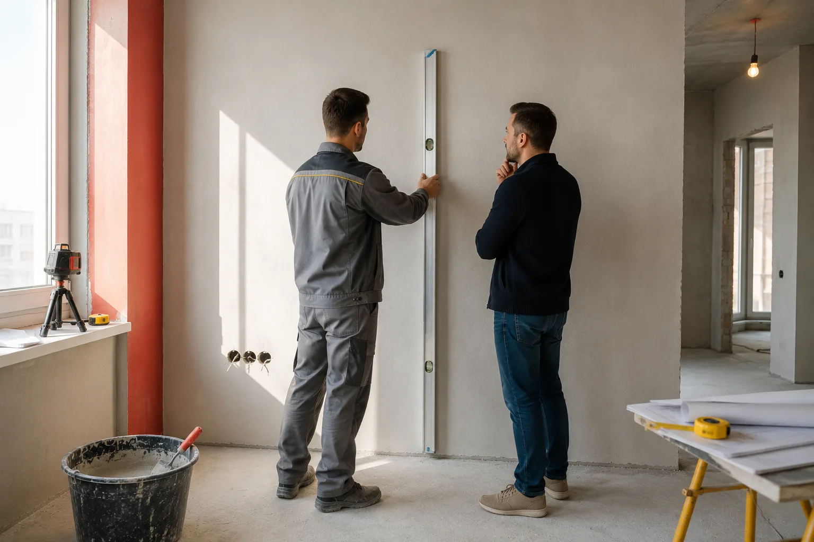

Приемка штукатурных работ: что проверить перед подписанием акта
Разбираем, как проверить штукатурку после высыхания: плоскость стен, углы, откосы, влажность основания, допустимые отклонения и дефекты, которые нужно внести в акт.
Разбираем, как проверить штукатурку после высыхания: плоскость стен, углы, откосы, влажность основания, допустимые отклонения и дефекты, которые нужно внести в акт.

Стены выглядят ровными, мастер сообщает о завершении работ и просит подписать акт приемки. Для большинства заказчиков именно в этот момент начинается самая сложная часть ремонта. Визуально поверхность может казаться качественной, но понять, соответствует ли она требованиям, без проверки довольно сложно.
Проблема в том, что многие дефекты проявляются уже после шпаклевки, покраски или монтажа мебели. Если принять работу слишком рано, исправление ошибок часто ложится на плечи владельца квартиры.
Поэтому приемка штукатурных работ должна проводиться сразу после полного высыхания поверхности и до начала следующего этапа отделки.
Штукатурка является базовым слоем всей дальнейшей отделки. На неё наносят шпаклевку, декоративную штукатурку, краску, клеят обои или укладывают плитку.
Если основание имеет волны, отклонения по уровню или скрытые дефекты, они неизбежно повлияют на качество финишной отделки.
Например, небольшая неровность может остаться незаметной под обоями, но станет хорошо видна после покраски или нанесения декоративной штукатурки с боковым освещением.
Поэтому любые замечания необходимо выявлять до начала последующих работ.
Профессиональное оборудование для первичной приемки не требуется.
Достаточно подготовить:
С помощью этих инструментов можно самостоятельно проверить большую часть параметров, влияющих на качество штукатурки.
Многие начинают осмотр с поиска неровностей. На практике сначала стоит проверить прочность покрытия.
Проведите рукой по поверхности. Качественная штукатурка не должна осыпаться, крошиться или оставлять большое количество пыли на ладони.
Затем осмотрите стены при боковом освещении. Свет, направленный вдоль поверхности, хорошо показывает волны, бугры и локальные перепады, которые практически не видны при обычном освещении.
Если уже на этом этапе заметны серьезные дефекты, дальнейшая проверка становится особенно важной.
Самый простой способ контроля — использование двухметрового правила.
Инструмент прикладывают к стене вертикально, горизонтально и по диагонали. Чем плотнее правило прилегает к поверхности, тем качественнее выполнена работа.
Особое внимание стоит уделить зонам возле окон, дверных проемов и внутренним углам. Именно здесь чаще всего появляются локальные перепады.
Для будущей установки кухни, встроенной мебели или крупноформатной плитки качество плоскости имеет решающее значение.
Требования к качеству штукатурных работ зависят от категории отделки и будущего назначения помещения.
| Вид штукатурки | Допустимое отклонение от вертикали |
|---|---|
| Простая | до 3 мм на 1 м |
| Улучшенная | до 2 мм на 1 м |
| Высококачественная | до 0,5 мм на 1 м |
Для современных квартир под покраску, декоративную штукатурку или встроенную мебель обычно выбирают улучшенное либо высококачественное качество поверхности.
При приемке штукатурных работ не допускаются:
Если дефект заметен невооруженным глазом, подрядчику стоит указать на него до подписания акта.
Особенно внимательно проверяют участки вокруг окон, дверей и мест будущей установки мебели.
Большинство заказчиков сосредотачиваются на стенах и забывают про геометрию помещения.
Между тем именно отклонения углов чаще всего становятся причиной проблем после ремонта.
Неровный откос сразу бросается в глаза после монтажа подоконника. Заваленный внутренний угол становится заметен после установки шкафа или кухонного гарнитура.
Поэтому при приемке обязательно проверяют вертикальность углов и геометрию всех проемов.
В новостройках штукатурные работы часто выполняются большими объемами и в сжатые сроки. Из-за этого даже при визуально аккуратном результате могут встречаться локальные дефекты.
Особенно внимательно стоит проверить стены возле оконных проемов, внешних углов и мест прохождения инженерных коммуникаций. Именно здесь чаще всего появляются микротрещины и перепады плоскости.
Еще один важный момент — влажность основания. Если работы завершены недавно, поверхность может выглядеть сухой только внешне. Начинать шпаклевание или покраску до полного высыхания штукатурного слоя не рекомендуется.
При приемке квартиры от застройщика лучше сразу зафиксировать все замечания в акте осмотра. Исправить недостатки на этом этапе значительно проще, чем после начала ремонта.
Одна из самых частых ошибок при приемке — ожидание идеально ровных стен независимо от класса отделки.
На практике небольшие отклонения допускаются нормативами и не считаются браком. Важно понимать разницу между допустимой погрешностью и нарушением технологии.
Например, если квартира готовится под оклейку плотными обоями, требования к поверхности будут менее строгими, чем под покраску или венецианскую штукатурку.
Перед приемкой желательно заранее уточнить у подрядчика или в договоре, какое качество поверхности должно быть получено в результате работ.
| Будущая отделка | Требования к качеству штукатурки |
|---|---|
| Обои | Допустимы небольшие локальные неровности |
| Флизелиновые обои под покраску | Повышенные требования к плоскости |
| Покраска | Высокие требования к геометрии |
| Декоративная штукатурка | Ровная и стабильная поверхность |
| Венецианская штукатурка | Практически идеальное основание |
Чем более гладкой будет финишная отделка, тем строже необходимо оценивать качество штукатурных работ еще на этапе приемки.
Если в ходе проверки выявлены дефекты, не стоит ограничиваться устными замечаниями.
Все недостатки лучше фиксировать на фото и вносить в акт замечаний. Это позволит избежать споров после начала следующих этапов ремонта.
Большинство подрядчиков устраняют выявленные недостатки до окончательной сдачи объекта. Намного сложнее доказать наличие брака после шпаклевки или покраски стен.
Перед оплатой убедитесь, что:
Если все пункты соблюдены, штукатурные работы можно считать выполненными качественно и переходить к следующему этапу ремонта.
В большинстве случаев базовую приемку можно выполнить самостоятельно. Правило, уровень и внимательный осмотр позволяют обнаружить большую часть серьезных дефектов.
Однако если речь идет о большой площади, дорогостоящей отделке или приемке квартиры в новостройке, имеет смысл пригласить независимого специалиста по техническому надзору. Стоимость такой проверки обычно несопоставима с затратами на исправление скрытых дефектов после завершения ремонта.
Главное правило приемки простое: любые сомнения лучше выяснять до подписания акта и окончательного расчета с подрядчиком. После начала следующих этапов отделки доказать наличие брака становится значительно сложнее.

Что проверить при приемке стен, какие дефекты недопустимы и почему требования к качеству штукатурки зависят от будущей финишной отделки.

С чего начинать ремонт в новостройке и почему штукатурка становится базой всей последующей отделки.